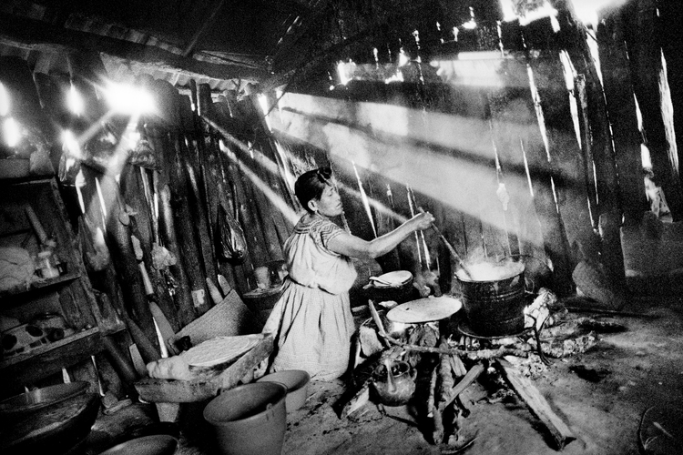

摄影大师印象（十一)—— Matt Black
Matt Black官网 对Matt Black的另一篇具有较高价值且不像本文又臭又长的的介绍可见，Hifi Tam的网页 点这里。
这是篇提早到来的文章，主要是感觉已经写了十篇大师印象，可以做一个梳理和说明了。 也是篇晚到的文章，一直想写Matt Black，因为通过他作品的表达，让我确定了回归传统意义的想法。 本文也主要在于意识形态，而非摄影技术的探讨上。
Party结束后，墨西哥一个州，Cochoapa el Grande。
A self-defense group. Apantla, Mexico.（墨西哥一些村镇为防止毒贩或腐败政府的污染， 选择自发成立自卫队，禁止毒贩和政府进入，进行自治。有些地方因为情况恶劣，自卫队员 需要带面罩。Matt Black抓住了这个墨西哥特色现象）
96-year-old in his bedroom. Teviston, California. 这个老人在另一张照片上也出现过。
Ex-farm laborer in his yard. Teviston, California.
Mother and son at home. Teviston, California.

A woman cooks in the kitchen of her home. San Miguel Cuevas, Mexico.
Church announcements. Allensworth, California.
以上是Matt Black拍摄的加利福尼亚和墨西哥的一些照片。后来Matt Black通过图书馆、网 络等开始了他的长期项目《The Geography of Poverty》，贫穷地理，走访美国贫困线下人 口超过20%的城镇，实地探访拍摄。
The Geography of Poverty USA — This week, I’ll begin a cross-country trip photographing America’s poorest places. The 70 cities, towns, and rural communities I will visit, mapped above, are designated “poverty areas,” meaning that more than 20% of the population live in poverty.
I have lived in a “poverty area” my entire life. California’s Central Valley, the rural, agricultural region where I am from, is home to three of the poorest metropolitan areas and the highest rates of “concentrated poverty” in the nation. For most of my adult life, I’ve witnessed and photographed the impact of poverty: to grow up poor is to grow up in a world that tells you that you don’t matter.
Today, over 45 million people qualify as poor in the US, earning less than $11,490 for a person or $23,550 for a family of four. At the same time, the share of income going to the top one percent of the population has more than doubled in the past 40 years. At the very top, the richest 0.1 percent’s share of national wealth has tripled.
The question is what kind of America are we to be: a land of opportunity, or just pockets of plenty amid a landscape of growing disparity and despair? This is what I’ll be examining over the summer as I chart America’s Geography of Poverty. Please follow along here and at @msnbcphoto. Special thanks to the Magnum Foundation Emergency Fund, @magnumfoundation, the Pulitzer Center for Crisis Reporting, @pulitzercenter, and the Economic Hardship Reporting Project, @economichardship for their support.
The Geography of Poverty USA - El Paso, TX. El Paso is a city in El Paso County, Texas. The population is 649,121 and 21.5% live below the poverty level.
The Geography of Poverty - Birds, Tulare, CA. Tulare is a city in Tulare County, California. The population was 59,278 at the 2010 census. Residents have a $18,203 per capita income and 21.4% live below the poverty level. #geographyofpoverty 36°12'28"N 119°20'49"W

Porcupine, South Dakota. Riders toward Wounded Knee.
Fort Gaines, Georgia. Downtown. 54% of Fort Gaines' population live below the poverty level.
Matt Black深信实地拍摄的摄影”玄学“，相较他自己的早期作品，《贫穷地理》中更多以 观念或意向的形式去拍摄当地场景，而非实际存在的事件或人物。整体画面沉郁黑暗，羊、 乌鸦、十字架常常出现，富有宗教苦难感，令人想起Salgado。
他的作品就我自己感觉而言，在摄影技艺方面，较本系列前面提到的大师稍逊一筹。但我仍 然将其纳入大师系列，是因为我感觉，如果将Matt Black的作品评为十分的话，其中文字可 能要占据三分，技艺占七分。
Matt Black通过说明文字将照片中呈现出来的本来较主观的——可以是任何一时刻任何一瞬间， 可以是极个别的事例，可以是通过对模棱两可的瞬间呈现出来的主观——变为了实际存在不可 辩驳的现实。
用Matt Black的话说，他怕我们将这些忘了……
我最欣赏的，个人眼光的，认为纪实摄影最应达到的，便是探索现实的意义！这意义本身大 于摄影技艺本身。如果在Matt Black的照片里，脱去文字，我会认为他的作品沦为相比而言 低档次的作品。
以下是非单纯摄影的言论，更多是我个人的主观臆想和揣测。 可以直接略过不看。
二十世纪五十年代到七十年代，世界各国爆发了种种规模庞大影响深远的事件，无数满怀理 想现实激情的人间谍、游行、抗议、暴动、革命……席卷诸多发达国家与社会主义国家自身， 最终失败并导致了传统马克思主义的被怀疑和倒台，取而代之以各种新马克思主义或后马克 思主义或改良马克思主义或后现代或整合理论，都在一定程度上对传统马克思主义进行了批 判和改良。
这些事件对现实生活的影响超过了普通人想当然的想法，影响极为深远，传统的、普遍的、 宏大的、整体的关怀和意义变得脆弱和倾向于虚无……虽然催生出各种特殊群体的利益诉 求——如同性恋、女权、种族，但整体上看，仍然倾向于对整体意义的虚无判断。其实世界上 对于弱势、受压迫剥削群体的关注时间本来就非常短，基本上算是起始于马克思那个时代吧。
群众更加注重于个人利益、欲望本身、倾向于便捷、简单，怀疑一切…… 传统的、人文关怀和批判，受到了轻视或批判，甚至嘲讽。 即使他们其实从没做过什么。
而我最为欣赏的，是在这种情境下仍然追求普遍意义、富有真诚、关怀与勇气内核的摄影师。 所以这个系列也多为这类摄影师。
有这样一群摄影师，他们即使怀疑意义到底是否存在，仍然愿意去践行这条意义的道路；
有一天，生活所迫或者磨难太多，改变甚少，他们感觉意义还是归于虚无或者太小，可能会 选择退去，回归田园或者回归尘世。
即使如此，他们当时去做的荣耀，在同类人心中长存，在被关怀的、看到作品后被触动的人 心中长存。即使对于已经退去的他们自己，我想或许也是有种自豪的。 就追求理想这事本身，结果可能不如过程重要。
在我这样主观的眼光中，从我知道的中国摄影师及作品里，我认为有以下几位摄影师或展览 或作品达到了对于他人的关怀或者真诚的探索或者档案式的记录，按拼音排序。因为我知道 的太少，只能节选四份。
陕西群体主办的《艰巨历程》展览（这个展览出过书，现在成绝版书了，太贵太贵，我只看 过几张照片）
卢广《中国的污染》
陈庆港《十四家：中国农民生存报告（2000-2010）》，CCTV纪录片里有的自杀调查那个不 知道为什么没有出，或许太过残忍了吗？
钱海峰 《绿皮火车》
冯立 《白夜》